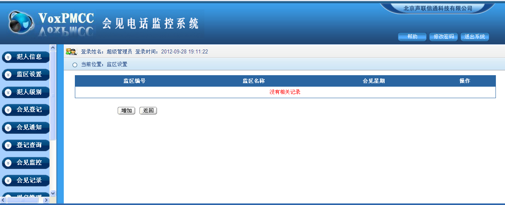
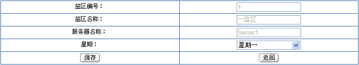
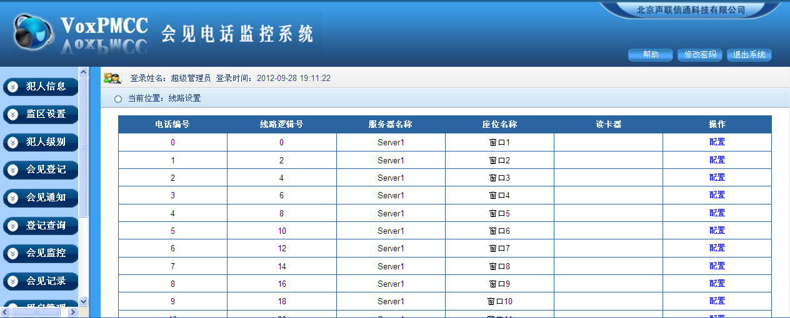
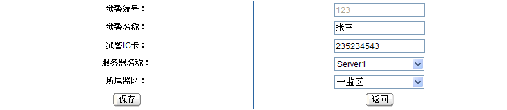
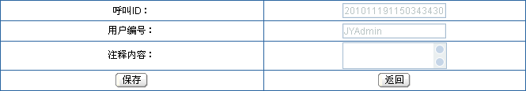

VoxPTCC监狱会见电话监控系统 V1.0
第六章 修改密码………………………………………………………………………………....34
第七章 退出系统…………………………………………………………………………………35
打开IE，在地址栏输入系统访问地址，鼠标左键单击转到按钮，弹出系统登录界面，
如下图所示：
默认访问地址：http://127.0.0.1:9009/JyQq 默认登陆帐号:jyadmin 密码：telejy
如上图所示，输入账号、密码，确认后鼠标单击登录按钮或键盘单击回车键，即可登录系统，如下图所示：
图1-1 系统登录后主界面
在系统运行之前，首先要对系统进行初始化配置，如：系统参数、监区设置、线路设置、犯人级别。
系统参数中只有一条初始化记录，在客户端中可按照监狱实际情况进行配置。如图1-1所示，在窗口左边单击“系统”按钮，弹出下图所示页面：
图2-1 系统参数
如图2-1所示，鼠标单击“配置”按钮，弹出下图所示页面：
服务器名称：初始化设置好后，不要随意修改。修改后，可能导致程序无法运行。
服务器IP：初始化设置好后，不要随意修改。修改后，可能导致程序无法运行。
状态端口：初始化设置好后，不要随意修改。修改后，可能导致程序无法运行。
监听端口：初始化设置好后，不要随意修改。修改后，可能导致程序无法运行。
录音网络地址：初始化设置好后，不要随意修改。修改后，可能导致程序无法运行。
监狱可根据实际会见电话线路部署情况增加监区、删除监区、修改监区，及会见星期设置，如图1-1所示，鼠标单击“监区设置”按钮，弹出下图所示页面：
图2-2 监区设置
鼠标单击“增加”按钮，弹出下图所示页面：
如上图所示，输入监区编号、监区名称，选择服务器名称、特殊监区（只有超级管理员才能查看特殊监区的相关信息），确认输入后，鼠标单击“保存”按钮，即可增加一个监区。返回上一级，按“返回”按钮即可。
鼠标单击所需修改监区的“修改”按钮，弹出下图所示页面：
如上图所示，输入所要修改的监区名称，重新选择服务器名称、特殊监区，确认输入后，鼠标单击“保存”按钮，即修改了该监区。返回上一级，按“返回”按钮即可。
鼠标单击所需删除监区的“删除”按钮，弹出下图所示对话框：
如上图所示，确定删除后，鼠标单击“确定”按钮，即可删除一个监区。
设置各监区只能在每天的特定时间才能会见。如图2-2所示，鼠标单击“会见星期设置”按钮，弹出下图所示页面：

鼠标单击“增加”按钮，弹出下图所示页面：

如上图所示，选择星期，确认选择后，鼠标单击“保存”按钮，即增加一个可会见的星期。返回上一级，按“返回”按钮即可。
鼠标单击所需修改时间段的“修改”按钮，弹出下图所示页面：
如上图所示，重新选择星期，确认选择后，鼠标单击“保存”按钮，即修改一个可会见的星期。返回上一级，按“返回”按钮即可。
鼠标左键单击所需删除星期的“删除”按钮，弹出下图所示对话框：
如上图所示，弹出删除成功对话框，即删除一个可会见星期。
在线路设置中对线路进行初始化配置，配置实际物理会见电话线路对应的窗口号，会见电话线路数量与语音板卡实际通道数量相关，显示在线路设置页面中。如图1-1所示，在窗口左边单击“线路设置”按钮，弹出下图所示页面：

图2-3 线路设置
每路会见电话需要与实际对应的窗口号匹配，这就需要对线路进行配置，如上图所示，鼠标单击“配置”按钮，弹出下图所示页面：
如上图所示，根据实际物理线路输入窗口名称，及读卡器的网络地址（如没有读卡器，可不用输入读卡器的网络地址），确认输入后，单击“保存”按钮即可。返回上一级，按“返回”按钮即可。
不同犯人，可以为其设置不同的级别（级别可添加），不同的级别每月会见次数、每次会见时长、每月亲情电话次数、每次亲情电话时长可以独立修改、删除。如图1-1所示，在窗口左边单击“犯人级别”按钮，弹出下图所示页面：

图2-4 犯人级别
鼠标单击“增加”按钮，弹出下图所示页面：

如上图所示，输入级别编号、级别名称、每月会见次数、每次会见时长、每月亲情电话次数、每次亲情电话时长。确认输入后，鼠标单击“保存”按钮，即增加一个级别。返回上一级，按“返回”按钮即可。
鼠标单击所需修改级别的“修改”按钮，弹出下图所示页面：

如上图所示，重新输入级别名称、每月会见次数、每次会见时长、每月亲情电话次数、每次亲情电话时长。确认输入后，鼠标单击“保存”按钮，即修改一个级别（注意：修改后级别中的每月会见次数和每次会见时长，在下个月初才能生效）。返回上一级，按“返回”按钮即可。
鼠标单击所需删除级别的“删除”按钮，弹出下图所示对话框：
如上图所示，确定删除后，鼠标单击“确定”按钮，即可删除一个级别。
只有管理员组人员和超级管理员才有用户管理和用户组管理权限；只有超级管理员才能给管理员组添加管理员，但是不能修改和删除管理员组，也不能为其修改权限，管理员组成员不能查询管理员组其他成员信息；假设一个监狱分为若干个部门，我们可以为每个部门分别建立一个用户组，然后为每个用户组赋予管理监区的权限，每个用户组可以管理一个或者多个监区，可以为每个用户组赋予访问功能权限。如图1-1所示，在窗口左边单击“用户组管理”按钮，弹出下图所示页面：
图3-1 用户组管理
鼠标单击“增加”按钮，弹出下图所示页面：
如上图所示，输入用户组编号、用户组名称，确认输入后，鼠标单击“保存”按钮，即可增加一个用户组（相当如一个部门）。返回上一级，按“返回”按钮即可。
鼠标单击所需修改用户组的修改按钮，弹出下图所示页面：

如上图所示，用户组编号不可修改，重新输入用户组名称， 确认输入后，鼠标单击“保存”按钮，即修改了该用户组。返回上一级，按“返回”按钮即可。
鼠标单击所需删除用户组的“删除”按钮，弹出下图所示页面：
如上图所示，确定删除后，鼠标单击“确定”按钮，即可删除一个用户组。注意：用户组删除后，组底下的组成员也将被删除。
用户权限可以根据业务需要自由定制，以确保系统数据的安全性，鼠标单击所需设置权限用户组的“设置权限”按钮，弹出下图所示页面：
如上图所示，鼠标单击选择监区权限中的监区（可以选择多个）、功能权限中的功能（可以选择多个），确认选择后，鼠标单击“保存”按钮，即完成权限设置。返回上一级，按“返回”按钮即可。
鼠标单击所需查看用户组成员的“查看组成员”按钮，弹出下图所示页面：
如上图所示，页面显示的是当前查看用户组的组成员。返回上一级，按“返回”按钮即可。
超级管理员可以创建管理员和普通用户账户；管理员只可以创建普通用户账户，普通用户不可以创建账户。如图1-1所示，在窗口左边单击“用户管理”按钮，弹出下图所示页面：
图3-2 用户管理
鼠标单击“增加”按钮，弹出下图所示页面：

如上图所示，输入登录帐号、所在部门、真实姓名，选择用户组，确认输入后，鼠标单击“保存”按钮，即可增加一个用户（新增加用户，默认密码为123456）。返回上一级，按“返回”按钮即可。
鼠标单击所需修改用户的“修改”按钮，弹出下图所示页面：
如上图所示，重新输入用户姓名、用户所属部门，选择用户所属用户组，确认输入后，鼠标单击“保存”按钮，即完成修改。返回上一句，按“返回”按钮即可。
鼠标单击所需删除用户的“删除”按钮，弹出下图所示对话框：
如上图所示，确定删除后，鼠标单击“确定”按钮，即可删除一个用户。
鼠标单击所需重置密码用户的“重置密码”按钮，弹出下图所示对话框：
如上图所示，鼠标单击“确定”按钮，密码即重置，重置后密码为123456。
犯人管理包括对犯人及亲属信息的增加、修改、删除、查询，支持批量导入、导出犯人及亲属数据。如图1-1所示，在窗口左边单击“犯人信息”按钮，弹出下图所示页面：
图4-1 犯人信息
对犯人信息的增加、删除、修改、查询
如图4-1所示，鼠标单击“增加”按钮，弹出下图所示页面：
如上图所示，输入犯人编号、犯人姓名、犯人IC卡号，选择服务器名称、所属监区、犯人级别、会见级别。确认输入后，鼠标单击“保存”按钮，即可增加一个犯人信息。返回上一级，按“返回”按钮即可。
如图4-1所示，选择监狱、监区、级别，输入犯人编号、犯人姓名，确认输入后，鼠标单击“查询”按钮，即可查询到犯人信息，支持各类组合条件查询，如下图所示：
鼠标单击所需修改犯人信息的“修改”按钮，弹出下图所示页面：

如上图所示，重新输入犯人姓名、犯人IC卡号、会见剩余次数，选择服务器、所属监区、犯人级别、会见级别、是否重点监控。确认输入后，鼠标单击“保存”按钮，即可修改犯人信息。返回上一级，按“返回”按钮即可。
鼠标单击所需删除犯人信息的“删除”按钮，弹出下图所示对话框：
如上图所示，确定删除后，鼠标单击“确定”按钮，即可删除一个犯人信息。
注意：删除犯人信息的同时，犯人对应的家属信息也同时删除。
对亲属信息的增加、修改、删除
如上图所示，鼠标单击“亲属”按钮，弹出下图所示页面：
鼠标单击“增加”按钮，弹出下图所示页面：
如上图所示，输入亲属身份证、亲属姓名、亲属ID卡号、地址、电话号码，选择与犯人关系、性别、缩位号码（如有二代身份证阅读仪，可直接从身份证上获取到相应信息）。确认输入后，鼠标单击“保存”按钮，即可为犯人增加一个亲属信息。返回上一级，按“返回”按钮即可。
鼠标单击“修改”按钮，弹出下图所示页面：
如上图所示，重新输入亲属身份证、亲属姓名、亲属ID卡号、地址、电话号码，重新选择与犯人关系、性别、缩位号码（如有二代身份证阅读仪，可直接从身份证上获取到相应信息）。确认输入后，鼠标单击“保存”按钮，即可修改一个亲属信息。返回上一级，按“返回”按钮即可。
鼠标单击“删除”按钮，弹出下图所示对话框：
如上图所示，确定删除后，鼠标单击“确定”按钮，即可删除一个犯人亲属信息。
如图4-1所示，输入查询条件，点击“查询”按钮，页面将显示查询到的犯人数据，如下图所示：
如上图所示，鼠标点击“导出”按钮（必须首先查询出犯人数据，才能点击“导出”按钮导出相应的犯人数据），弹出下图所示窗口：
如上图所示，鼠标单击“保存”按钮，即可弹出Excel文件另存为对话框，如下图所示：
如上图所示，选择好存放地址后，鼠标单击“保存”按钮，包含相应犯人数据的Excel文件即可下载到本地。
如图4-1所示，鼠标点击“请选择文件”按钮，弹出下图所示窗口：
如上图所示，选择好存放犯人数据的Excel文件后，鼠标单击“打开”按钮，存放犯人数据的Excel文件路径将出现在下图所示输入框中：
如上图所示，鼠标点击“导入”按钮（数据量比较大的话，可能需要等候几分钟才能弹出下图所示页面），弹出下图所示页面：
如上图所示，鼠标点击“保存”按钮，弹出下图所示对话框：
如上图所示，鼠标点击“确定”按钮，即可成功导入犯人数据，将弹出下图所示页面：
狱警管理包括对狱警信息的增加、修改、删除、查询。如图1-1所示，在窗口左边单击“狱警信息”按钮，弹出下图所示页面：
图4-2 狱警信息
对狱警信息的增加、删除、修改、查询
鼠标单击“增加”按钮，弹出下图所示页面：
如上图所示，输入狱警编号、狱警名称、狱警IC卡，选择服务器名称、所属监区，确认输入后，鼠标单击“保存”按钮，即可增加一个狱警信息。返回上一级，按“返回”按钮即可。
如图4-2所示，选择所属监区，输入狱警编号、狱警姓名，确认输入后，鼠标单击“查询”按钮，即可查询到狱警信息，支持各类组合条件查询，如下图所示：
鼠标单击所需修改狱警信息的“修改”按钮，弹出下图所示页面：

如上图所示，重新输入狱警姓名、狱警IC卡号，重新选择所属监区，确认输入后，鼠标单击“保存”按钮，即可修改狱警信息。返回上一级，按“返回”按钮即可。
鼠标单击所需删除狱警信息的“删除”按钮，弹出下图所示对话框：
如上图所示，确定删除后，鼠标单击“确定”按钮，即可删除一个狱警信息。
日志管理中记录了所有用户的增加、删除、修改、登录等操作信息，只有管理员才有权限查看。如图1-1所示，在窗口左边单击“操作日志”按钮，弹出下图所示页面：
图4-3 操作日志
如上图所示，选择开始时间、结束时间、级别、模块，输入操作、内容（支持模糊查询）、用户编号、用户姓名、来源IP，确认输入后，鼠标单击“查询”按钮，即可查询到操作日志信息，支持各类组合条件查询，弹出下图所示页面：
如上图所示，查询到操作日志后，如果需要查看日志详细信息，鼠标单击“查看详细信息”按钮，弹出下图所示页面：
如上图所示，页面显示了该次操作的时间、用户编号、用户姓名等详细信息，返回上一级，按“返回”按钮即可。
在服刑人员会见过程中，在“会见监控”菜单中，能对其进行实时监听、停止监听、切断、实时录入监听注释。如图1-1所示，在窗口左边单击“会见监控”按钮，弹出下图所示页面：
图5-1 会见监控
如上图所示，状态显示为通话中，表示此线路正在会见，犯人监区、犯人姓名、会见人信息、剩余时间都会显示出来，此时即可对该线路进行监听、停止监听、切断、实时录入监听注释。
如上图所示，鼠标单击“监听”按钮，从耳机或者音响中，就能听到服刑人员和亲属之间的通话声音，此时“停止监听”、“切断”按钮将被激活，颜色呈现为暗红。如下图所示：
如上图所示，正在实时监听服刑人员和亲属之间的通话，此时鼠标单击“停止监听”按钮，即可停止对其监听。“停止监听”、“切断”按钮即被锁定，颜色呈现为原来的黑色。如下图所示：
如果正在对会见电话进行实时监听，鼠标单击“切断”按钮，即可切断服刑人员和亲属之间的通话（注意：只有在监听中，才能切断电话）。
如果正在对会见电话进行实时监听，此时用鼠标选择插话内容，点击“插话”按钮，即可对其插话（注意：只有在监听中，才能进行插话）。如下图所示：
在监听过程中，如果需要对服刑人员和亲属之间的通话内容进行注释说明，只要鼠标单击“监听注释”按钮，即可弹出一个文本输入框，在此文本框中输入注释说明，输入完成后，鼠标单击保存即可。注释说明和录音记录对应，在通话录音中查询。到如下图所示：
在会见记录中，可查看到所有犯人会见通话的详细信息，同时可回放通话录音录像、下载录音录像到本地、导出会见记录到Excel表格，各监区管理员可根据权限下载录音录像文件。如图1-1所示，在窗口左边单击“会见记录”按钮，弹出下图所示页面：
图5-2 会见记录
如上图所示，选择通话开始时间、通话结束时间、服务器名称、犯人监区、会见类型，输入犯人编号、犯人姓名、亲属姓名。确认输入后，鼠标单击查询按钮，即可查询到犯人会见记录，系统支持各类组合条件查询。如下图所示：
如上图所示，鼠标单击“播放录音录像”按钮，此时页面右下角将弹出下图所示媒体播放器：

如上图所示，用鼠标点击按钮即可实现播放、暂停播放、快进、快退、控制音量功能。
在回放录音录像后，如需对这条录音录像记录进行注释说明，鼠标点击“注释”按钮，弹出下图所示页面：

如上图所示，在注释内容中即可输入注释说明，输入完成后，鼠标单击“保存”按钮即可。返回上一级，按“返回”按钮即可。
在注释管理中，将能看到录音回放注释及监听注释。如下图所示：
如上图所示，鼠标单击“下载录音”按钮，弹出下图所示对话框：

如上图所示，鼠标单击“保存”按钮，即可弹出录音文件另存为对话框，如下图所示：
如上图所示，选择好录音存放地址后，鼠标单击“保存”按钮，录音文件即可下载到本地。
在会见报表菜单中，能统计到各监区一段内的严见和宽见次数，能以统计图的形式显示出来，统计图可打印。如图1-1所示，在窗口左边单击“会见报表”按钮，弹出下图所示页面：
图5-3 会见报表
如图5-3所示，选择通话时间，确认选择后，鼠标单击“查询”按钮，即可查询到会见次数信息，如下图所示：
如图上图所示，鼠标左键单击“统计图”按钮，会见次数将以图表的形式显示出来，如下图所示：
点击会见登记菜单,弹出界面如下图所示:
按上图所示可以按犯人编号和姓名查找需要等级的犯人和其亲属信息进行登记，也可以直接进入登记界面查找犯人和其亲属的信息，然后选中需要登记的犯人和亲属点击提交按钮即可
如下图所示
单击窗口右上方“修改密码”按钮，弹出下图所示窗口：
如上图所示，输入原始密码、新密码、确认新密码（输入和新密码一样的密码），确认后单击确定按钮即可。
单击窗口右上方“退出系统”按钮，弹出下图所示对话框：
如上图所示，如确定退出，单击“确定”按钮即可。
第